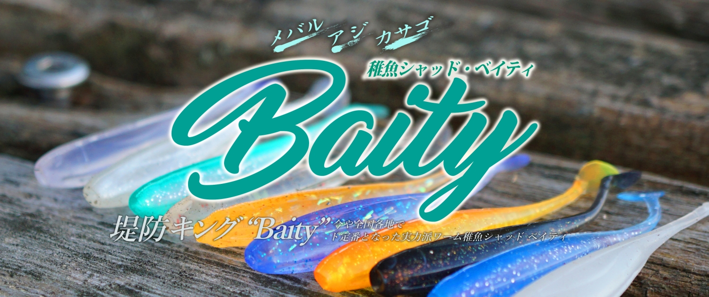
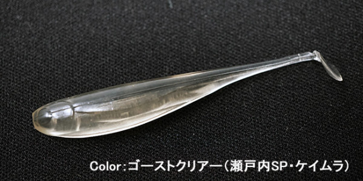
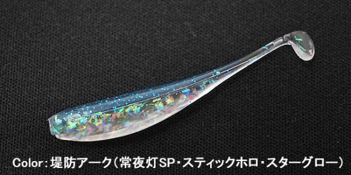
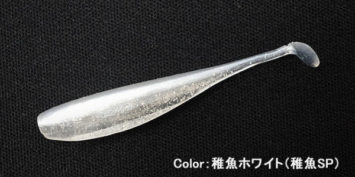
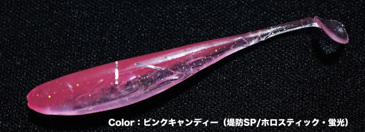
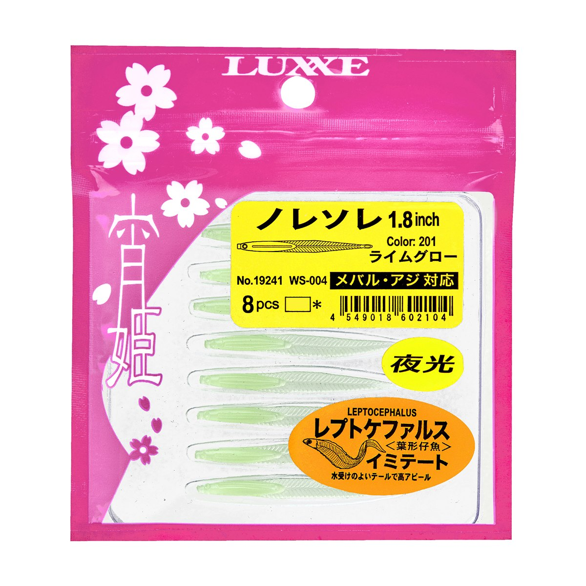

稚魚シャッド ベイティ
（Baity）
稚魚シャッド ベイティは、インクスレーベル（INX.label）のライトゲーム用ワームです。
レオン加来匠さんが手がけたライトゲーム用ワームの第一弾で、ピンテールのように扱えて、シャッドテールのアピールも持つオールマイティなワーム。スレ知らず・魚種を選ばない実力で、今や全国の堤防で定番になっています。

画像出典:INX.label公式HP
スペック
- メーカー
- INX.label（インクスレーベル）
- 監修
- レオン加来匠
- タイプ
- シャッドテールワーム（ライトゲーム用）
- カラー
- 全11色
- ターゲット
- メバル・アジ・カサゴ
- 価格
- 759円〜（税抜）
▼今すぐチェック
稚魚シャッド ベイティの特徴
ピンテールの扱いやすさとシャッドのアピールを持つ、稚魚そのもののワーム
-
ピンテール×シャッドのいいとこ取り
見た目はスワールテールシャッドの小型版だが、ボディに対するテールの細さやバランスがライトゲーム専用に作り込まれている。ピンテールのように扱えて、シャッドのアピールも出せるので、スレにくく魚種も選ばない。
-
吸い込みやすい「耳たぶ」の感触
スワールテールシャッドゆずりのやわらかい素材で、魚が吸い込みやすく、フックセットもしやすい。
-
ズレにくく、割けにくい
やわらかいのにズレにくく、割けにくい素材。テストでは1本でアジを40匹釣ったほどで、コストパフォーマンスも高い。
稚魚シャッド ベイティの使い方
ジグヘッドに付けて、ゆっくり巻いて、テールを震わせながら稚魚のように泳がせるのが基本です。
アジングなら軽めのジグヘッドでレンジを刻み、メバルやカサゴには5g前後のジグヘッドで少し深いところを探るのもおすすめ。巻きでもフォールでも反応するので、いろいろな誘い方を試してみましょう。
稚魚シャッド ベイティの得意な状況
堤防のアジング・メバリング・カサゴ狙いの全般で使えるワームです。
常夜灯まわりや、稚魚・アミを食べている魚にスレ知らずでよく釣れるのが強み。カラーごとに「常夜灯SP」「稚魚SP」「月夜SP」など使う場面が決められているので、状況に合わせて選びやすいです。
ワンポイント
カラー名の後ろの「SP」を目安にすると選びやすいです。常夜灯の下なら堤防アーク・堤防ナトリウム、稚魚を食べている時は稚魚ホワイト・稚魚ブルーのように、場面で使い分けましょう。
人気カラー
稚魚シャッド ベイティの人気カラーを紹介します。

ゴーストクリアー瀬戸内SP。ケイムラ入りのクリアで、澄んだ水やスレた魚に。

堤防アーク常夜灯SP。スティックホロとスターグローで、常夜灯の下で目立つ。

稚魚ホワイト稚魚SP。稚魚を食べている時のシルエットカラー。

ピンクキャンディー堤防SP。ホロスティックと蛍光で、にごりや夜にもよく見える。
画像出典:INX.label公式HP
▼今すぐチェック
稚魚シャッド ベイティに似ているルアー
-
 鰺道ワーム ゼロレジスト
メジャークラフト
詳細はこちら＞
鰺道ワーム ゼロレジスト
メジャークラフト
詳細はこちら＞
水の抵抗が少ないアジング用ワーム。繊細に探りたい時に。
-

宵姫 ノレソレ1.8インチ がまかつ 詳細はこちら＞稚魚のようなシルエットのワーム。小さなベイトに合わせたい時に。
-
 リヴァーチ 1.6インチ
フィッシュラボ
詳細はこちら＞
リヴァーチ 1.6インチ
フィッシュラボ
詳細はこちら＞
小型のライトゲームワーム。アジのサイズが小さい時に。